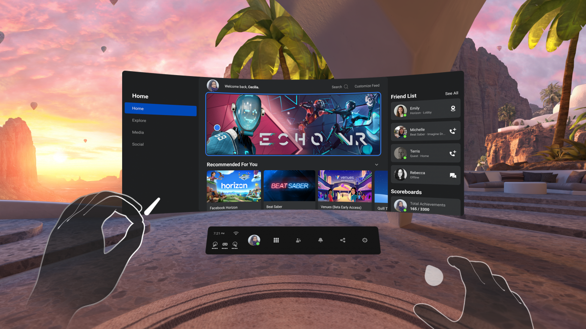
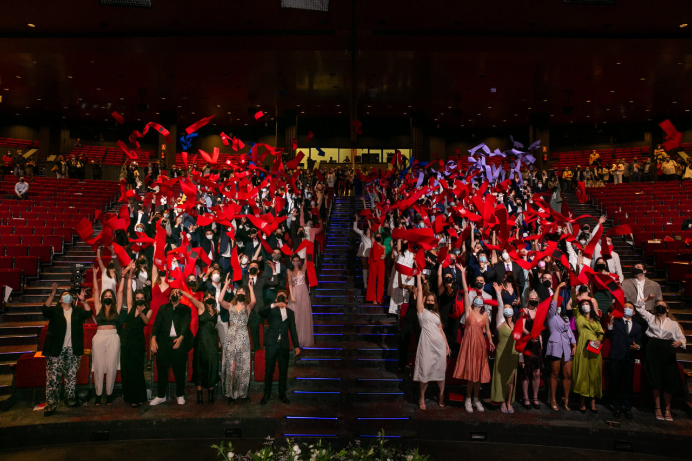

El fin de semana pasado, tras cuatro años de lágrimas, sudor, y mucha pasión, porfin, me gradué. Fue un acto muy especial y emotivo por todo lo que ello conllevó y donde pude ver a mi familia, compañeros, amigos y dusfrutar del broche de oro de mi carrera universitaria (por ahora...)
Me gradué en Diseño y Desarrollo de Videojuegos, por la Universidad Camilo José Cela, habiendo estudiado en el campus universitario de ESNE, algo que quizá hoy, sea algo más sonado, pero que cuando empecé nadie sabia muy bien lo que suponia estudiar algo así; en ocasiones, ni siquiera yo mismo. Desde el principio, mis padres supieron ver en mi, el potencial que tenía para inventar, crear historias y darles vida a través de múltiples herramientas. Eso, junto a mi pasión y fascinación desde pequeño por las tecnologías, y por su puesto a su apoyo, la razón principal de que hoy esté donde esté, haciendo lo que creo que me llena. Gracias Papá y gracias Mamá por creer y confiar todo este tiempo en mi. Gracias también a mi hermano, que me ha sabido cuidar, valorar y apoyar.
4 Años de llenos de experiencias
Empecé con cierta incertidumbre. Aún recuerdo esas clases de dibujo técnico, matemáticas, física o historia del arte, en donde no entendia aún muy bien su propósito para lo que quería desarrollar, que eran videojuegos. Sin embargo, conforme avanzaba, más cuenta me di de la importancia de todo lo que nos cuesta y que creemos que no vale para nada y de lo confundidos que estamos. Conocer, practicar y profundizar en estas materias comunes, me valió para más tarde adentrarme en programas de modelado 3D, de diseño asistido, o de motores de renderizado en tiempo real. También me valio para resolver algoritmos y patrones de diseño de arquitecturas de código o para implementar sistemas de fluidos o shaders gráficos.
Ir conociendo poco a poco el abanico de perfiles técnicos y artísticos, me sirvió para alimentar poco a poco mis ganas por saber más y más y en algún momento descubrir tecnologías como las inmersivas, y la grandisima relación que tenían con creación de videojuegos. Mi curiosidad llevó a querer más hasta que un día Facebook anunció la salida de las Oculus Ques 2: la segunda generación de gafas All-in-one que había llegado para revolucionar la industria de la Realidad Virtual.
3 meses tras su lanzamiento, aproveché mi vigesimo-segundo cumpleaños para auto-regalarmelas y adentrarme en este mundo. Entonces lo supe... ¡el potencial que tenía la VR era enorme! y cuando terminase la carrera quería dedicarme a ello, y quien sabe, ayudar a mejorar el mundo con ello.
He podido tener la suerte de buscar unas prácticas universitarias por mi cuenta y dar con un sitio donde hacen realidad esto. Además, estoy dando mis primeros pasos profesionales ahora con ellos tras salir de la universidad, una pequeña empresa situada en Cuenca llamada Vsion Studio, que se dedica entre otras cosas, a la formación a través de la Realidad Virtual, pero esto... es historia de otro día :)
Lo que me llevo conmigo de la universidad
A parte del conocimiento técnico en diversas materias, me llevo conmigo a amigos, con los que espero seguir en contacto mucho tiempo aunque nuestros caminos se separen por razones obvias. También a profesores y compañeros, a los que admiro. Y sobretodo las habilidades para la vida personal y profesional como el esfuerzo, la constancia, el trabajo en equipo, la autosuperación, la importancia de comunicar... Ha sido una experiencia muy enriquecedora en todos los sentidos.
Estudiar una carrera universitaria no es facil ni barato. Tampoco es para todo el mundo. Requiere de esfuerzo y sacrificio, pero merece la pena si lo que buscas es un reto, y sientes fascinación por el conocimiento. No es para todos, aunque nos creamos que si, pero si es lo que buscas, ve a por ello y confía en ti mismo/a. Solo me queda poder desearte suerte para lo que está por venir. Si estás interesado en iniciar una carrera, curso, master o formación relacionada con el diseño o creación de videojuegos, y tienes dudas, puedes contactarme sin problemas e intentaré echarte un cable con lo que sea ;)
